Input Queue MTU Rail Alignment Procedure
What is Affected
This procedure applies to the following parts.
- Section 1: Adjusting Part, INPUT Q, MODULE
- Section 2: Adjusting Part, MTU INPUT Q, MODULE
- [Cut in to Panther Serial Number 1264 and higher]
Parts and Materials Required
- Proper PPE
- Input Queue Rail Alignment Tool
- 2 mm Hex Key
Time Required
Procedure
- Put on proper PPE.
- Shut down the Panther System and PC.
- Open the Input Queue drawer and remove all MTUs from the module.
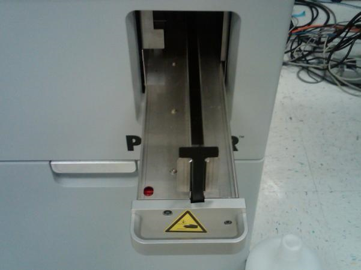
- Place the Input Queue Rail Alignment Tool on the Input Queue's rail.
- Slide the Input Queue Rail Alignment Tool along the length of the rails.
 | Note—If the Input Queue Rail Alignment Tool does not slide freely along the rails, the rails will need alignment. |
- Locate and loosen the 4 screws that hold the left Input Queue rail.
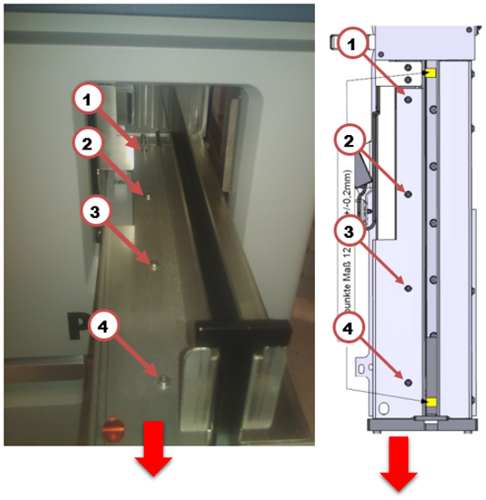
- Pull the left rail as far towards the front of the system as possible.
- Tighten the 4 screws that were loosened in step 6.
- Place the Input Queue Rail Alignment Tool on the rails near the front of the Input Queue.
| Note—Properly spaced and aligned input queue rails will allow the tool to fall under its own weight. If the tool cannot slide to the bottom under its own weight, then the rails are misaligned at the front of the Input Queue. |
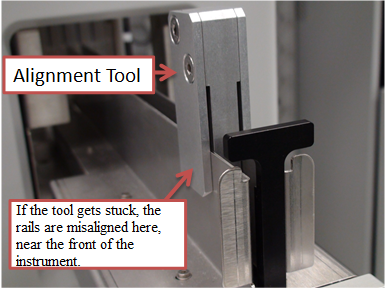
- Loosen screws 2, 3, and 4 with a 2mm hex key if the Input Queue Rail Alignment Tool gets stuck near the front of the Input Queue. Do not loosen screw 1.
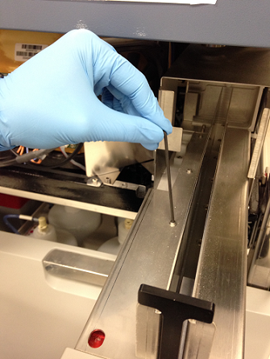
- With the screws loosened place the Alignment Tool on the rails near the front of the module. The tool should now slide easily onto the rails. Gently squeeze the rails together to set them against the tool as shown below.

- Tighten the screws that were loosened in step 10 with the Input Queue Rail Alignment Tool still on the rails.
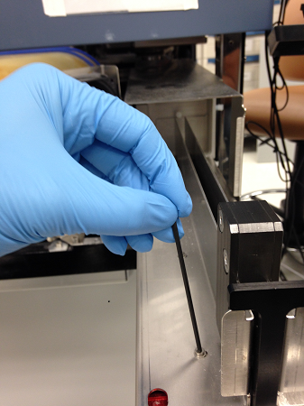
- Re-check the alignment of the rails. The tool should now slide freely along the rails.
- Place the Input Queue Rail Alignment Tool on the rails near the rear of the Input Queue.
| Note—Properly spaced and aligned Input Queue rails will allow the tool to fall under its own weight. If the tool cannot slide to the bottom under its own weight then the rails are misaligned at the rear of the Input Queue. |
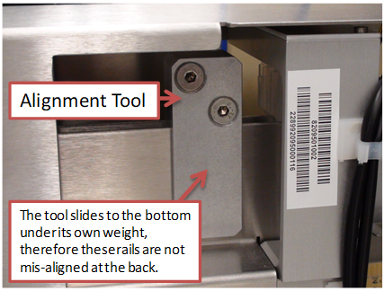
- Loosen screws 1, 2, and 3 with a 2 mm hex key if the Input Queue Rail Alignment Tool gets stuck near the rear of the Input Queue. Do not loosen screw 4.
| Note—The Mid Bay drawer may need to be opened in order to access screw 1. Remove the Luminometer inject before opening the Mid Bay drawer. |
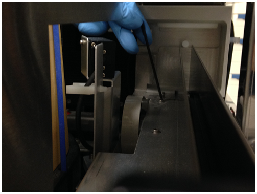
- With the screws loosened, place the Input Queue Rail Alignment Tool on the rails near the rear of the module.
- Slide the tool on the rails to ensure the rails are aligned.
- Tighten the screws loosened in Step 15.
- Re-check the alignment of the rails by sliding the Input Queue Rail Alignment Tool on the rails.
- If after adjusting the rails, the Input Queue Rail Alignment Tool still does not slide freely along the rails, the rails may have been formed incrorrectly.
- Using the Input Queue Rail Alignment Tool as a guide, try to determine if the rails bow inward or outward as shown below.
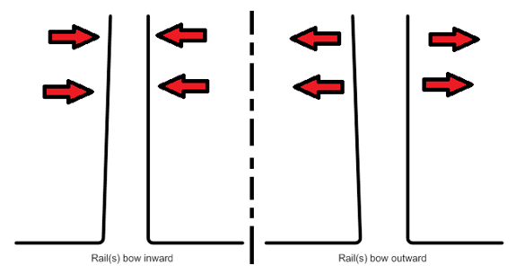
- After determining the direction of the bowing, use the Input Queue Rail Alignment Tool to apply firm pressure to the rail that is bowed.
| Note—The Input Queue Rail Alignment Tool can be used to apply leverage to the rail to be bent. |
- Test the alignment by sliding the Input Alignment Tool along the rails.
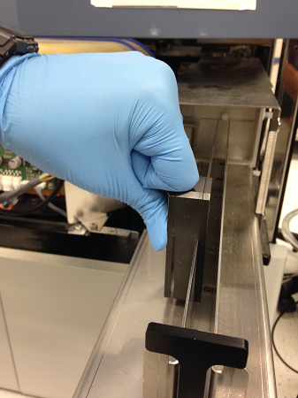
- Replace the module if none of the above steps results in satisfactorily aligned Input Queue rails.
- Put on proper PPE.
- Shut down the Panther System and PC.
- Open the Input Queue drawer and remove all MTUs from the module.
- Place the Input Queue Rail Alignment Tool on the Input Queue's rail.
| Note—If the Input Queue Rail Alignment Tool does not slide freely along the rails, the rails will need alignment. |
- Located the 8 screws that are shown below.
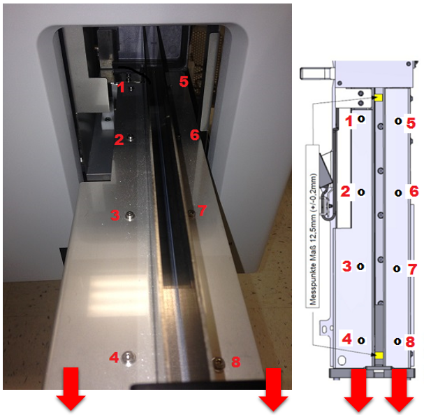
- Loosen all 8 screws.
- Pull the rails as far towards the front of the system as possible and re-tighten the screws.
- Place the Input Queue Rail Alignment Tool on the rails near the front of the Input Queue.
| Note—Properly spaced and aligned input queue rails will allow the tool to fall under its own weight. If the tool cannot slide to the bottom under its own weight, then the rails are misaligned at the front of the Input Queue. |
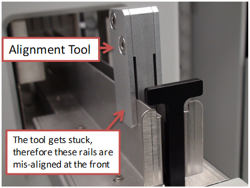
- Place the Input Queue Rail Alignment Tool on the rails near the back of the Input Queue.
| Note—Properly spaced and aligned input queue rails will allow the tool to fall under its own weight. If the tool cannot slide to the bottom under its own weight, then the rails are misaligned at the rear of the Input Queue. |
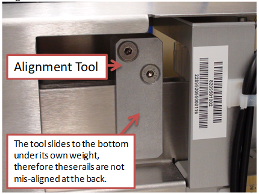
- Loosen screws 2, 3, 4, 6,7, and 8 with a 2 mm hex key if the Input Queue Rail Alignment Tool gets stuck near the front of the Input Queue.
| Note—The image below shows a green square surrounding the screws that need to be loosened to align the front of the Input Queue. Do not loosen screw 1 and 5. |
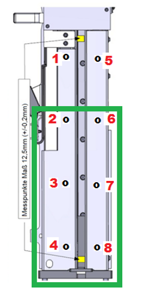
- Loosen screws 1, 2, 3, 5, 6, and 7 with a 2 mm hex key if the Input Queue Rail Alignment Tool gets stuck near the rear of the Input Queue.
| Note—The image below shows a green square surrounding the screws that need to be loosened to align the rear of the Input Queue. Do not loosen screw 4 and 8. |
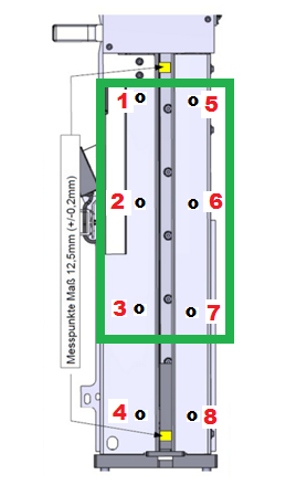
- With the screws loosened place the Alignment Tool on the rails near the location where it previously would become stuck (front or rear). The tool should now slide onto the rails without resistance.
- Gently squeeze the rails together to set them against the Input Queue Rail Alignment Tool as seen below.
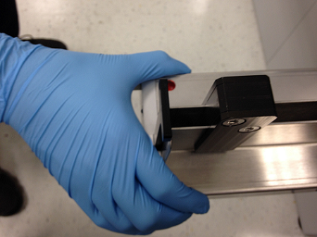
- With the tool still on the rails in the misaligned location, tighten the screws that were previously loosened.
- Re-check the alignment of the rails using the Input Queue Rail Alignment Tool.
- If after adjusting the rails, the Input Queue Rail Alignment Tool does not slide freely along the rails, the rails may have been formed incorrectly.
- Use the Input Queue Rail Alignment Tool as a guide and determine if the rails bow inward or outward as shown below.
- After determining the direction of the bowing, use the Input Queue Rail Alignment to apply firm pressure to the rail that is bowed.
| Note—The Input Queue Rail Alignment Tool can be used to apply leverage to the rail to be bent. |
- Test the alignment by sliding the Input Queue Rail Alignment Tool along the rails.

- If none of the above steps results in satisfactorily aligned Input Queue rails, replace the module.
- Use the Input Queue Rail Alignment Tool to check the alignment of the rails.
- Place the Input Queue Rail Alignment Tool on the rails.
- The Alignment Tool should slide freely along the length of the rails and not bind.
- Use MTUs to check the alignment of the rails.
- Obtain 5 MTUs.
- Verify the MTUs are not warped, damaged, or defective.
- Look closely at the spacing between the MTU tubes. MTUs that have significantly uneven spacing between the MTU tubes should be reported and not used.
| Note—The image below shows an MTU with uneven spacing. |
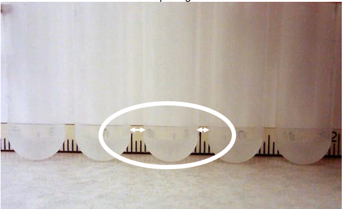
- Place the MTUs at the front of the Input Queue.
- Slowly push the group of MTUs with your finger back and forth along the rails.
- Observe how the MTUs slide the rails.
- MTUs should slide freely and not bind, tip, or rotate.
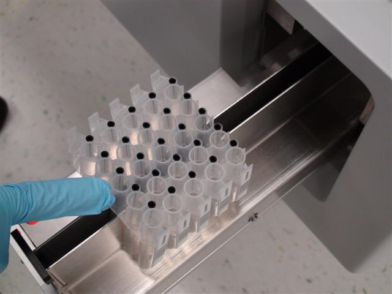
- Power on the Panther System and PC.
- Log in to Panther Service Software.
- Re-check the Input Queue to Distributor alignment.
- Run a 5 MTU System OQ and include the report as part of the Service Report.
 Multi-tube unit—Container used to process tests in the instrument. An MTU contains five separate reaction tubes. The MTU is moved through the instrument by the linear distributor and includes five tiplets for pipettiing to be used in the mag wash station. INPUT Q, MODULE
Multi-tube unit—Container used to process tests in the instrument. An MTU contains five separate reaction tubes. The MTU is moved through the instrument by the linear distributor and includes five tiplets for pipettiing to be used in the mag wash station. INPUT Q, MODULE button at the top of the page to send feedback, comments, or change requests.
button at the top of the page to send feedback, comments, or change requests.